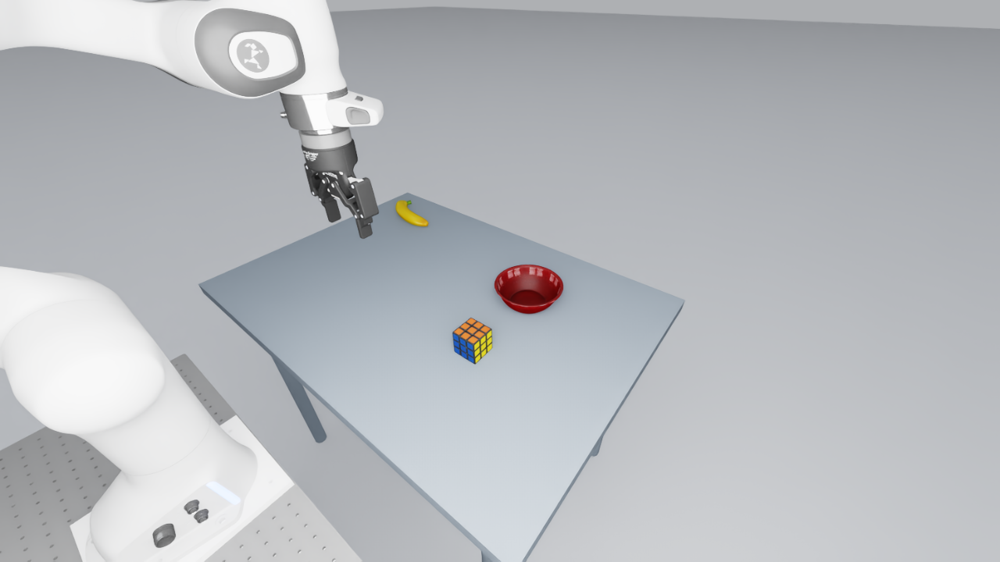
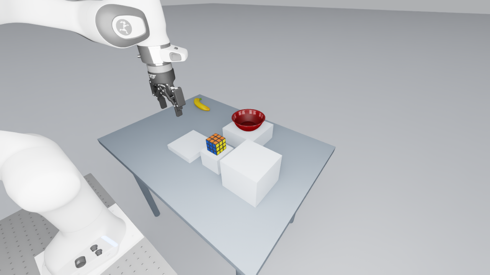

Under construction. No learned-policy study launch authorized.
Three physical relations, fixed cameras and scoring, and a consistent clean appearance. Each selected layout must demonstrate both goals across three full resets.
| Family | Neutral start | Goals and counterbalance |
|---|---|---|
| LAT | Cube and bowl centers align laterally within 5 mm. | At least 30 mm to either side; balance robot approach side. |
| HEIGHT | Cube and bowl centers align vertically within 5 mm. | At least 30 mm higher/lower on stable supports; balance upper-support side. |
| DIST | Cube is equally distant from bowl and plate within 5 mm. | At least 30 mm advantage toward either anchor; balance bowl side. |


Target: 29 distinct layouts per family (one pilot, four development, 24 confirmation). Scripted trials establish scene feasibility; the 1,044-cell learned-policy queue remains planned.
Scene inputs and clean receipts · Clean cohort · Cluster handoff